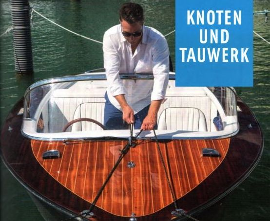
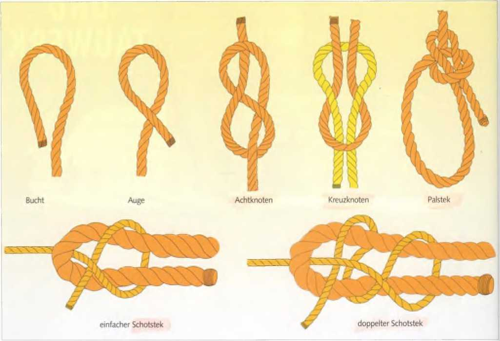

Alles, was zum Sichern oder Festmachen einer Leine an irgendetwas oder zum Verbinden von Leinen dient, heißt Knoten oder Stek. Seemännische Knoten müssen
► einfach und schnell herzustellen sein,
► sich zuverlässig bekneifen und halten und
► leicht wieder zu lösen sein, auch in nassem Tauwerk.
Immerhin kann von der Haltbarkeit eines solchen Knotens die Sicherheit von Schiff und Besatzung abhängen.

Bucht ist ein in Haarnadelform gelegtes Ende.
Auge ist die seemännische Bezeichnung für alle Arten von Schlingen. Es kann ein lose gelegtes Auge sein (wie hier) oder auch ein festes, wie beim Augspleiß.
Achtknoten: Er kommt stets in den Tampen von Schoten, damit sie nicht aus ihren Blöcken oder Leitösen rauschen.
Kreuzknoten: Er dient zum Verbinden zweier gleich starker Enden aus gleichem Material. Wichtig: Er muss symmetrisch sein, die Tampen müssen auf derselben Seite aus der Bucht des anderen Tampens kommen. Vorsicht, auch wenn er richtig gemacht worden ist, kann er sich in sehr glattem Kunstfaser-Tauwerk aufziehen.
Einfacher und doppelter Schotstek: Beide verbinden zwei ungleich starke Enden oder Enden aus ungleichem Material. Die Tampen müssen auf der gleichen Seite liegen. Bei steifem Kunstfaser-Tauwerk ist unbedingt der doppelte Schotstek zu empfehlen. Auch bei glatten gleich starken Enden sollte man den doppelten Schotstek dem Kreuzknoten vorziehen.
Palstek: Er ist der wichtigste Knoten an Bord. Mit ihm lässt sich ein beliebig großes Auge herstellen, das sich nicht zusammenziehen kann. Er dient zum Festmachen an Pfählen, Pollern oder auch Ringen oder im Notfall, um jemand, der über Bord gefallen ist, im Wasser zu sichern. Auch Leinen kann man mit zwei Palsteks zuverlässig verbinden. Der Tampen soll außerhalb des Auges liegen.

Rundtörn und halber Schlag sind Ausgangsbasis für weitere Knoten.
1½ Rundtörn und 2 halbe Schläge sind eine Knotenverbindung zum vorübergehenden Festmachen an Rohr, Ring, Spieren oder Stangen.
Slipstek: Überall dort wichtig, wo man ein belegtes Ende, auf dem Kraft steht, schnell loswerfen will oder muss. Ein Ruck am Tampen, und der Knoten ist gelöst.
Webeleinstek: Er dient zum Festmachen an Pollern oder Ähnlichem, sofern Poller oder Festmacheleine nicht zu dick sind. Dann bekneift er sich nicht genügend. Zusätzlich sollte er unbedingt durch zwei halbe Schläge gesichert werden. Man kann ihn über einen Poller werfen, indem man einfach zwei Augen legt. Als gesteckter Webeleinstek – teilweise auch auf Slip – findet er Verwendung zum kurzfristigen Festmachen, z. B. von Fendern an der Seereling.
Stopperstek: Mit ihm kann ein Tampen an ein laufendes Ende gesteckt werden, beispielsweise die Vorleine an eine Schlepptrosse. Er hält nur, solange Kraft in Zugrichtung darauf steht.